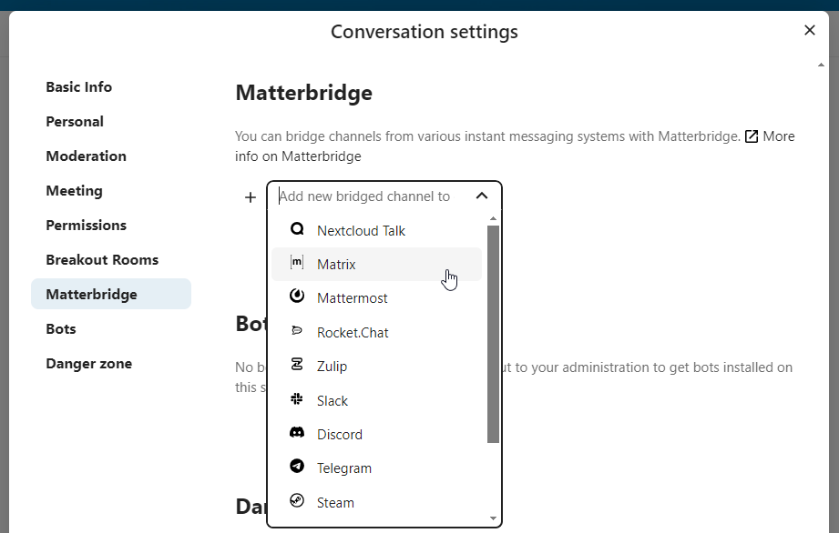
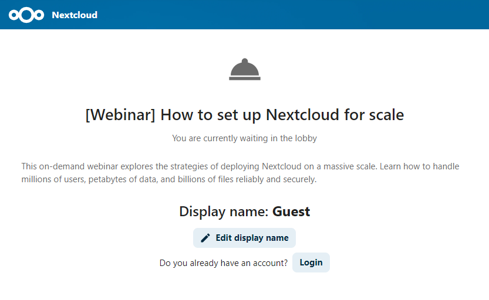
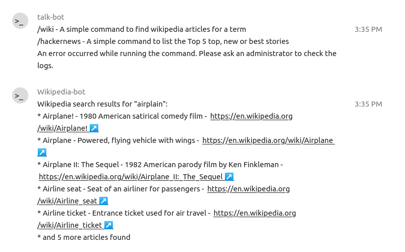
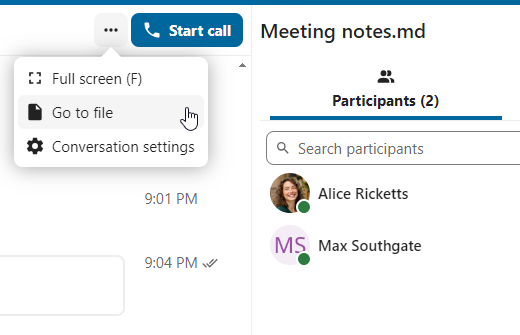
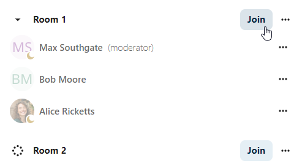
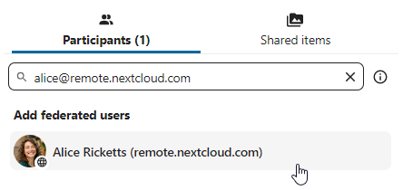

خصائص "المحادثة" Talk المتقدمة
يحتوي تطبيق "المحادثة" Talk من نكست كلاود على عدد من الميزات المتقدمة و المفيدة.
Matterbridge
يتيح تكامل Matterbridge في نكست كلاود إمكانية إنشاء "جسور" بين محادثات Talk والمحادثات على خدمات الدردشة الأخرى مثل MS Teams و Discord و Matrix وغيرها. يمكنك العثور على قائمة بالبروتوكولات المدعومة على صفحة Matterbridge github. <https://github.com/42wim/matterbridge#features> `_
يمكن للمنسق إضافة اتصال Matterbridge في إعدادات محادثة الدردشة.
{kind=link}
لكل جسر حاجته من حيث التكوين. تتوفر المعلومات الخاصة بمعظمها على موقع Matterbridge wiki و يمكن الوصول إليها من خلال قائمة مزيد من المعلومات more information في قائمة `` ...``. يمكنك أيضًا `الوصول إلى الويكي مباشرة. <https://github.com/42wim/matterbridge/wiki> `_
صالة الانتظار Lobby
تتيح لك ميزة صالة الانتظار Lobby عرض شاشة انتظار للضيوف حتى تبدأ المكالمة. هذا مثالي للندوات عبر الإنترنت مع مشاركين خارجيين مثلاً.
{kind=link}
يمكنك اختيار السماح للمشاركين بالانضمام إلى المكالمة في وقت محدد، أو عند قفل صالة الانتظار Lobby يدويًا.
الأوامر
تتيح نكست كلاود للمستخدمين تنفيذ إجراءات باستعمال الأوامر commands. الأمر يكون شكله عادةً هكذا:
/wiki airplanes
يمكن للمشرفين تكوين الأوامر و تمكينها و تعطيلها. و يمكن للمستخدمين استخدام الأمر مساعدة help لمعرفة الأوامر المتاحة.

/help
{kind=link}
مزيد من المعلومات في توثيق المشرفين لـ"المحادثة" administrative documentation for Talk ـ
المحادثة من الملفات
في تطبيق الملفات، يمكنك الدردشة حول الملفات الموجودة في الشريط الجانبي، و حتى إجراء مكالمة أثناء تحريرها. عليك أولاً أن تنضم إلى الدردشة.


يمكنك بعد ذلك الدردشة أو إجراء مكالمة مع مشاركين آخرين، حتى عند بدء تحرير الملف.

في "المحادثة" Talk، سيتم إنشاء محادثة للملف. يمكنك الدردشة من هناك أو العودة إلى الملف باستخدام قائمة `` ...`` في الأعلى.
{kind=link}
إنشاء مهام من الدردشة أو مشاركة مهام في الدردشة
إذا تم تنصيب "الرُّقعَة" Deck، يمكنك استخدام قائمة ... لرسالة محادثة chat message و تحويل الرسالة إلى مهمة task على "الرُّقعَة" Deck.

{kind=link}
من داخل "الرُّقعَة" Deck، يمكنك مشاركة مهام في محادثات الدردشة.


الغرف الجانبية Breakout rooms
تسمح لك الغرف الجانبية Breakout rooms بتقسيم مكالمة "المحادثة" Talk في نكست كلاود إلى مجموعات أصغر لإجراء مناقشات أكثر تركيزاً. يُمكن لمدير المكالمة إنشاء عدة غرف جانبية و تخصيص مشاركين لكل غرفة.
ملاحظة
Breakout rooms are currently not available in conversations that are joinable by guests (public conversations).
تهيئة الغرف الجانبية Breakout rooms
لإنشاء الغرف الجانبية Breakout rooms، يلزم أن تكون مُنسِّقاً في مجموعة المحادثة. أنقُر على قائمة الشريط العلوي و اضغَط على "إعداد غرف جانبية Setup breakout rooms".

سيتم فتح مربع حوار حيث يمكنك تحديد عدد الغرف التي تريد إنشاءها و طريقة تعيين المشاركين. هنا ستظهر لك 3 خيارات:
تعيين المشاركين تلقائيًا Automatically assign participants: سيقوم Talk تلقائيًا بتعيين المشاركين في الغرف.
تعيين المشاركين يدويًا Manually assign participants: ستنتقل إلى محرر المشاركين حيث يمكنك تعيين المشاركين في الغرف يدويّاً.
السماح للمشاركين بالاختيار Allow participants choose: سيتمكن المشاركون من الانضمام إلى الغرف الجانبية التي يختارونها بأنفسهم.

إدارة الغرف الجانبية
بمجرد إنشاء الغرف الجانبية، سيمكنك رؤيتها على الشريط الجانبي.

من ترويسة الشريط الجانبي
Start and stop the breakout rooms: this will move all the users in the parent conversation to their respective breakout rooms.
بث رسالة إلى جميع الغرف Broadcast a message to all the rooms: سيؤدي ذلك إلى إرسال الرسالة إلى جميع الغرف في نفس الوقت.
قم بإجراء تغييرات على المشاركين المعينين Make changes to the assigned participants: سيؤدي هذا إلى فتح محرر المشاركين حيث يمكنك تغيير المشاركين المُعيَّنِين إلى أيّ غرفة جانبية. من خلال هذا الحوار، من الممكن أيضًا حذف الغرف الجانبية.
{kind=link}
من عنصر الغرفة الجانبية في الشريط الجانبي، يمكنك أيضًا الانضمام إلى غرفة جانبية معينة أو إرسال رسالة إلى غرفة معينة.
{kind=link}
Call recording
The recording feature provides users with an opportunity to:
Start and stop recordings during a call.
Record the video and audio stream of the speaker, as well as screen share.
Access, share and download recorded files for future reference or distribution.
Enabling this feature requires the recording server to be set up by the system administration.
Manage a recording
The moderator of the conversation can start a recording together with a call start or anytime during a call:
Before the call: tick the checkbox "Start recording immediately with the call" in "Media settings", then click on "Start call".
During the call: click on the top-bar menu, then click "Start recording".


The recording will start shortly, and you will see a red indicator next to the call time. You can stop the recording at any time while the call is still ongoing by clicking on that indicator and selecting "Stop recording", or by using the same action in the top-bar menu. If you do not manually stop the recording, it will end automatically when the call ends.

After stopping a recording, the server will take some time to prepare and save the recorded file. The moderator, who started the recording, receives a notification when the file is uploaded. From there, it can be shared in the chat.

{kind=link}
Recording consent
For compliance reasons with various privacy rights, it is possible to ask participants for consent to be recorded before joining the call. The system administration has the flexibility to utilize this feature in several ways:
Disable consent completely.
Enable mandatory consent system-wide, requiring consent for all conversations.
Allow moderators to configure this option on a conversation level. In such cases, moderators can access the conversation settings to configure this option accordingly:
{kind=link}
If recording consent is enabled, every participant, including moderators, will see a highlighted section in the "Media settings" before joining a call. This section informs participants that the call may be recorded. To give explicit consent for recording, participants must check the box. If they do not give consent, they will not be allowed to join the call.


Federated conversation
With Federation feature, users can create conversations across different federated Talk instances and use Talk features as if they were on a same server.
Important Under current development. Basic chat features are available, more to come in the future!
Feature is required to be set up by the system administration.
Send and accept invites
The moderator of the conversation can send an invite to participant on a different server:
{kind=link}
When receiving a notification, user will see a counter of pending invites above the conversations list.

Upon clicking it, more information will be provided about inviting party, and user can either accept or decline the invitation.

By accepting the invite, conversation will appear in the list as any other one.